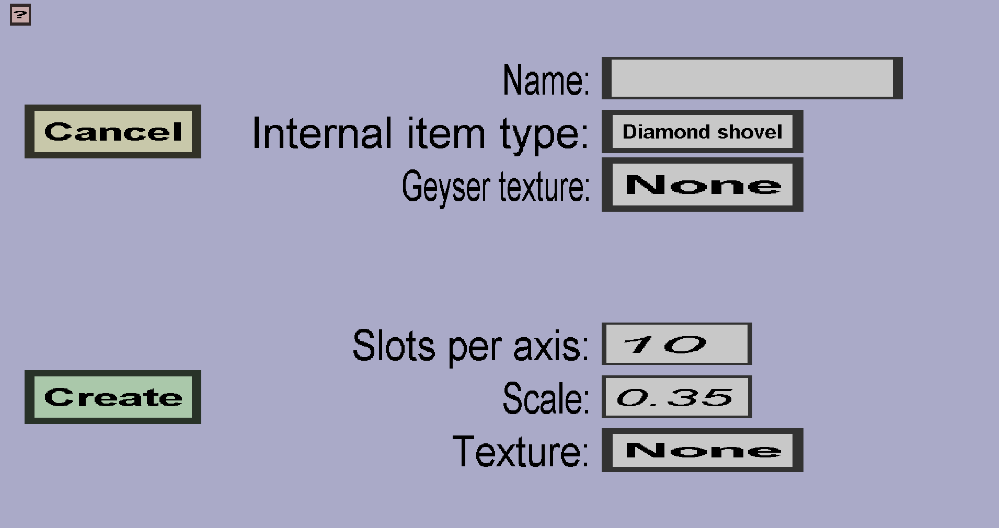

The sphere projectile cover edit menu can be used to create or modify sphere-shaped projectile covers. If you just started creating a new sphere projectile cover, it should look like this:
There should be a 'Cancel' button and a 'Create' or 'Apply' button. There should also be edit fields for the name, number of slots per axis, and the scale. Furthermore, there should be buttons for the internal item type and texture. To explain what everything is for, I will first explain what sphere projectile covers are and how they work.
Every projectile cover needs a unique name. The name will be used as filename in the resourcepack that is eventually generated. It will also be shown in the projectile cover overview in the editor.
(Custom) projectile covers are 'hidden' custom items that can't be obtained by players, but do have their own item model and item texture, which is why they need an internal item type . Custom projectiles using that projectile cover will be 'followed by' a dropped item with the custom item model and texture, which will cause the custom projectile to look like that 'hidden' custom item. It doesn't really matter what internal item type you use, so I recommend using one that you would not often use for regular custom items (like diamond shovels). That is because there is a limit on the number of custom items and projectile covers that can have the same internal item type.
When you export with a Geyser/Bedrock resourcepack, this texture will be given to the projectile cover. Unfortunately, Geyser doesn't support dropped item models, so it's much more limited than the projectile covers shown to Java edition players.
Sphere projectile covers will have an item model that looks like a sphere. The Scale will determine how big the sphere will be (and thus how big the projectile will look in-game). The Slots per axis are a bit more complicated. Because minecraft item models are cube-based and the sphere model is supposed to look like a sphere, I used a lot of cubes to approximate a sphere shape. The Slots per axis affects the number of cubes used to do so. The higher you make it, the more the model will look like a sphere, but also the more expensive it will be (takes long to create for the editor and it takes longer for players to download and load the resourcepack).
The Texture is the texture that the projectile cover (actually item model) will get. You need to create the texture you would like to use. It should be 16x16 pixels and it will be used as follows: The upper side of the texture will be drawn on the upper side of the sphere model and the lower side of the texture will be drawn on the lower side of the sphere model. Adjacent pixels in the texture will also be adjacent on the sphere model. Additionally, the left-most pixels will be adjacent to the right-most pixels on the sphere-model to make the texture continuous. In-game, the model will rotate slowly horizontally (because it's a dropped item).